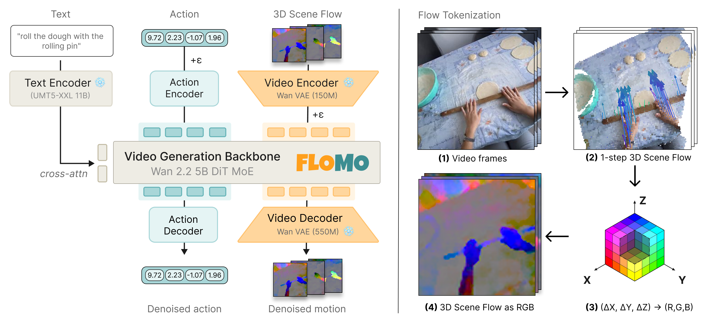

1 / 8 · Motivation
[1/8] We built FloMo to learn robot skills from human video.
It starts from a pretrained video model, but predicts 3D motion and actions instead of future RGB frames. On our three real-robot tasks, that gave 91% success, versus 40% for video + action.
